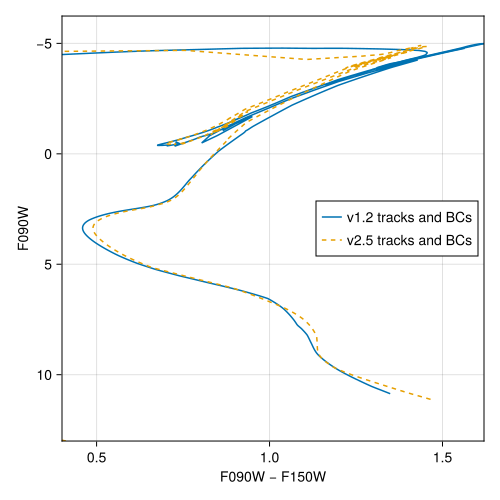

MIST
The Mesa Isochrones and Stellar Tracks (MIST; Dotter [1], Choi et al. [12], Dotter et al. [13] and Bauer et al. [14]) library provides stellar evolutionary tracks for a wide range of initial stellar masses and metallicities, computed with the MESA stellar evolution code. The tracks use the equivalent evolutionary point (EEP) framework Dotter [1] to facilitate robust isochrone construction and mass interpolation.
MIST-specific code lives in the MIST submodule, which can be accessed as
using StellarTracks.MIST # load all exported methods
using StellarTracks.MIST: MISTv1Library, X, Y, Z # load specific methodsTwo versions of the MIST stellar track libraries are currently supported:
- MIST v1.2 — the original release with scaled-solar chemical compositions, covering initial stellar masses from 0.1 to 300 M☉ and metallicities $-4 \le [\text{M}/\text{H}] \le 0.5$ assuming the Asplund et al. [15] solar chemical abundances.
- MIST v2.5 — updated release adding [α/Fe] as a free parameter, revised solar chemical abundances [16], a denser metallicity grid, and an expanded initial stellar mass grid [13, 14].
Common features
Both versions share the following characteristics:
- Stellar evolutionary tracks computed using MESA, spanning from the pre-main sequence through (when applicable) the white dwarf cooling sequence.
- Both rotating (
vvcrit=0.4) and non-rotating (vvcrit=0.0) models. - Tracks with equivalent evolutionary points (EEPs) for robust isochrone construction.
- The same subset of data columns extracted from the full tracks.
- Integration with BolometricCorrections.jl to generate photometric isochrones in any supported bandpass.
Version comparison
| Feature | v1.2 | v2.5 |
|---|---|---|
| Primary reference(s) | Dotter [1] and Choi et al. [12] | Dotter et al. [13] and Bauer et al. [14] |
| Solar abundances | Asplund et al. [15] | Grevesse and Sauval [16] |
| α-element enhancement | fixed (scaled-solar) | [α/Fe] ∈ {−0.2, 0, 0.2, 0.4, 0.6} |
| [Fe/H] range | −4.0 to +0.5 (15 values) | −4.0 to +0.5 (17 values) |
| Initial mass range | 0.1 to 300 M☉ | 0.1 to 300 M☉ |
vvcrit values | {0.0, 0.4} | {0.0, 0.4} |
| Chemistry type | MISTv1Chemistry | MISTv2Chemistry |
| Track type | MISTv1Track | MISTv2Track |
| Track set type | MISTv1TrackSet | MISTv2TrackSet |
| Library type | MISTv1Library | MISTv2Library |
The color-magnitude diagram below illustrates the effect of switching from MIST v1.2 tracks + BCs to MIST v2.5 tracks + BCs for the same age (log10(age [yr]) = 10.05), metallicity ($[\text{Fe}/\text{H}] = -1.234$), and reddening ($A_V = 0.02$ mag). Both use vvcrit=0 and [α/Fe]=0. The v1.2 isochrone is shown as a solid line; the v2.5 isochrone as a dashed line.

Note that for ease of transition from earlier versions of StellarTracks.jl that only supported MIST v1.2, the following deprecated aliases are available:
MISTTrackaliases forMISTv1TrackMISTTrackSetaliases forMISTv1TrackSetMISTLibraryaliases forMISTv1Library
MIST References
This page cites the following references:
- [1]
- [12]
- J. Choi, A. Dotter, C. Conroy, M. Cantiello, B. Paxton and B. D. Johnson. MESA ISOCHRONES AND STELLAR TRACKS (MIST). I. SOLAR-SCALED MODELS. ApJ 823, 102 (2016).
- [13]
- A. Dotter, E. B. Bauer, M. Park, C. Conroy, A. P. Milone, M. Joyce and M. Cantiello. MESA Isochrones and Stellar Tracks (MIST). II. Models with alpha-enhanced Chemical Composition. ApJS 283, 64 (2026), arXiv:2602.22012 [astro-ph.SR].
- [14]
- E. B. Bauer, A. Dotter, C. Conroy, T. Cunningham, M. Park and P.-E. Tremblay. MESA Isochrones and Stellar Tracks (MIST). III. The White Dwarf Cooling Sequence. ApJS 283, 41 (2026), arXiv:2509.21717 [astro-ph.SR].
- [15]
- M. Asplund, N. Grevesse, A. J. Sauval and P. Scott. The Chemical Composition of the Sun. Annual Review of Astronomy and Astrophysics 47, 481–522 (2009).
- [16]
- N. Grevesse and A. Sauval. Standard Solar Composition. Space Science Reviews 85, 161–174 (1998).